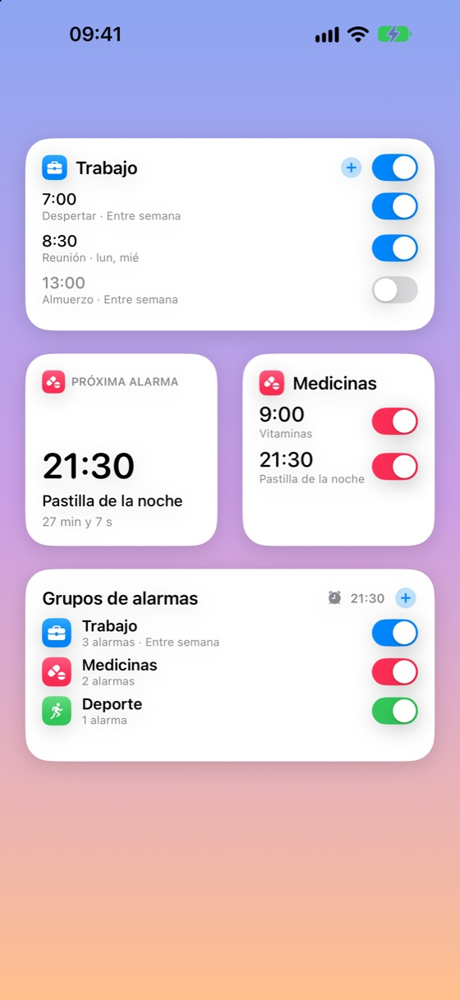
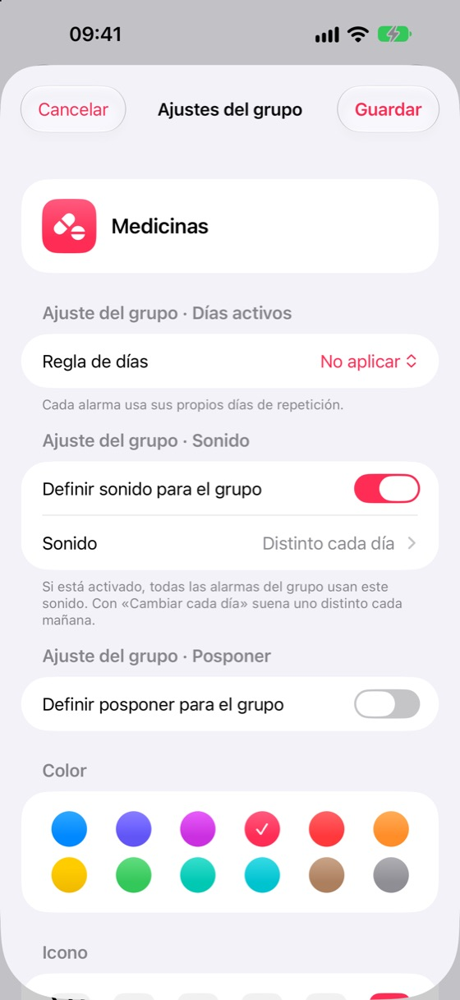
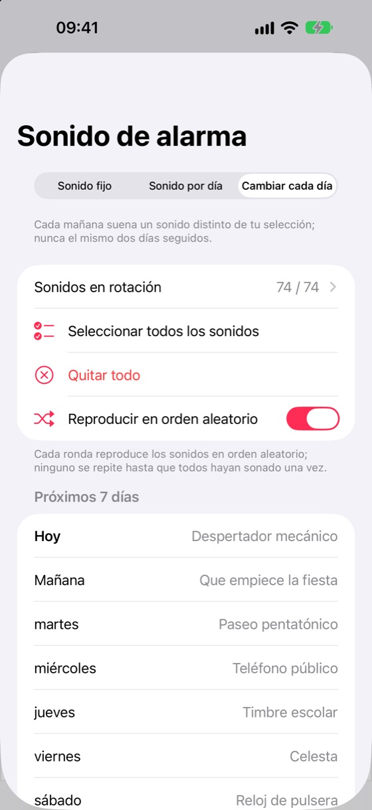
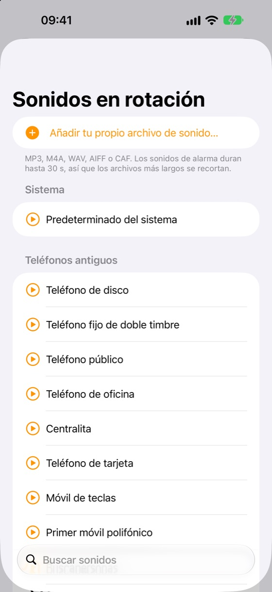
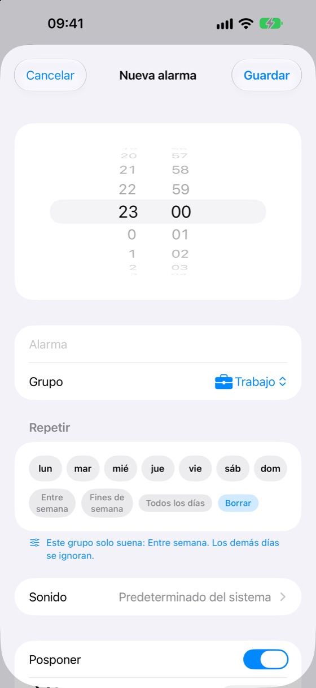
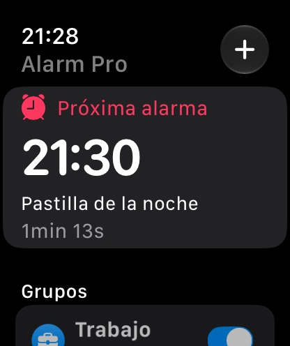
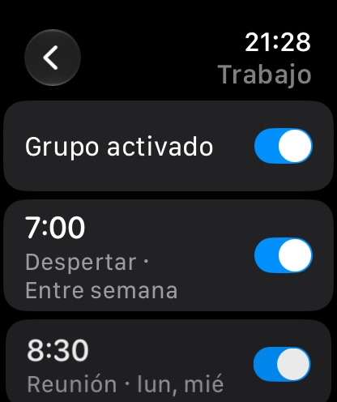

Todo lo que le falta a la app Reloj
Alarm Pro usa el sistema de alarmas integrado del iPhone: suenan a pantalla completa incluso en modo silencio o con un modo de concentración.
Grupos desplegables
Los grupos se ordenan uno debajo de otro y se abren con un toque. Cada grupo y cada alarma tiene su propio interruptor.
Días por grupo
Un grupo de entre semana nunca suena el fin de semana. Ajusta los días una vez en el grupo y se aplican a todas sus alarmas.
Un sonido nuevo cada día
Deja que cada mañana suene un sonido distinto de tu lista o elige uno para cada día de la semana.
66 sonidos originales + los tuyos
Desde timbres de teléfonos antiguos hasta despertares suaves, todos creados para Alarm Pro. También puedes añadir tus archivos.
Widgets y Centro de control
Activa grupos y alarmas desde la pantalla de inicio o toca un widget para añadir y editar alarmas.
Apple Watch
Consulta la próxima alarma, activa grupos y alarmas, y añádelas o edítalas desde tu muñeca. Con complicaciones.
Importar del Reloj
Trae tus alarmas del iPhone de una vez con Atajos. Los duplicados se omiten.
Posponer y pantalla bloqueada
Ajusta el posponer por alarma o por grupo. La cuenta atrás aparece en la pantalla bloqueada y en la Dynamic Island.
17 idiomas, claro y oscuro
Se abre en el idioma de tu dispositivo y sigue automáticamente el modo claro u oscuro.
Premium: sin anuncios, grupos ilimitados
Alarm Pro es gratis con hasta 2 grupos. Premium quita los anuncios y desbloquea grupos ilimitados en iPhone y Mac. Paga al mes, o al año con 2 meses gratis.
Apoya con una donación
¿Te gusta la app? Haz una donación única por la cantidad que elijas.
Míralo de cerca
Cada pantalla sigue el idioma y la apariencia de tu dispositivo.





En tu muñeca
La app del Apple Watch se sincroniza con tu iPhone: activa grupos, edita alarmas y ve cuál sonará después.


Categorías de sonidos
Cada sonido se creó especialmente para Alarm Pro.